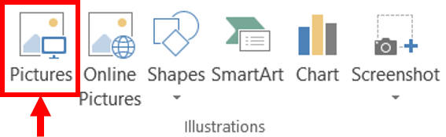
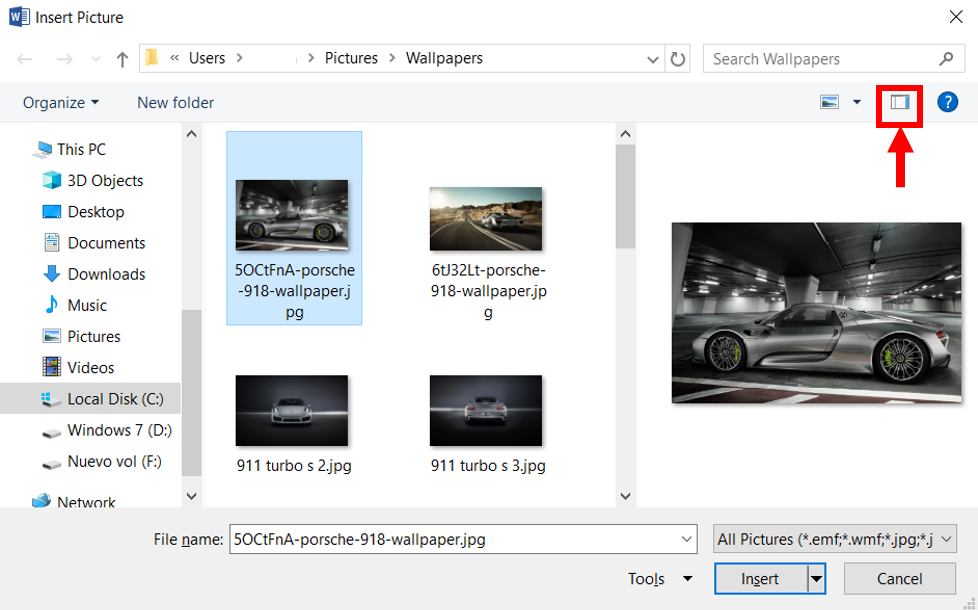

Insertar Objetos
Hoy en día, para que un documento sea considerado como bueno debe incluir, siempre que sea necesario, gráficos o imágenes.
Una imagen es un dibujo o fotografía guardada como un archivo gráfico.
En Word se pueden distinguir distintos elementos gráficos.
| Tipo de Imagen | Descripción |
|---|---|
| Imágenes Prediseñadas (Clip Art) | Son imágenes prediseñadas procedentes de las librerías de Word organizadas por temas. Estas imágenes están construidas utilizando vectores, lo que permite su manipulación sin pérdida de resolución. También se pueden desagrupar en los elementos que las forman, introducir cambios y volverlas a agrupar. En realidad, se pueden considerar estas imágenes como un conjunto de objetos gráficos. |
| Imágenes de Mapa de Bits (Picture) | Se refiere a imágenes fotográficas procedentes de cámaras digitales, de Internet, de programas como Photoshop, PhotoDraw o PaintShopPro. Suelen ser principalmente de tipo JPG o GIF pero hay de muchos tipos más. Sobre estas imágenes se pueden realizar algunas operaciones como cambiar el tamaño y el brillo, pero no se pueden desagrupar en los elementos que las forman. Están formadas por puntos o pixeles que tienen cada uno un color y una posición pero no están relacionados unos con otros. Aunque estas imágenes admiten cambios de tamaños, en ocasiones, si se reducen y posteriormente se intenta ampliar de nuevo pueden perder resolución. Cuando se habla de imágenes, en general, se está refiriendo a este tipo de imágenes no vectoriales. |
| Tipo de Imagen | Descripción |
|---|---|
| Dibujos Creados con Word (Shapes) |
Mediante autoformas, líneas, rectángulos, elipses y otros. |
| WordArt | Rótulos disponibles de una galería que se pueden personalizar con diversas opciones. |
| Microsoft Graph | Representación de datos en forma gráfica. |
| Tipo de Imagen | Descripción |
|---|---|
| JPG/JPEG | Es un formato que permite distintos niveles de compresión. Se utiliza mucho en Internet, sobre todo para imágenes fotográficas con muchos tonos. |
| GIF | Es el más utilizado en Internet, permite una buena compresión con imágenes de pocos tonos, tipo iconos y botones. También permite crear gráficos animados. |
| BMP | No admite compresión por lo que estas imágenes ocupan mucho espacio. Se utiliza, por ejemplo, en la imagen tapiz de Windows. |
| PNG | Moderno formato que permite compresión. |
| WFM | Formato de las imágenes prediseñadas de Word. |
Siguiendo con el ejemplo del curriculum vitae, si deseara agregarle una fotografía, siga estos pasos:
- Coloque el punto de intersección donde se desea agregar la imagen.
- Vaya al menú "Insertar" (Insert) de la cinta de opciones.
- Seleccione la opción de "Ilustraciones" (Illustrations) y después la opción de "Imágenes" (Pictures).
- Se abrirá una ventana de diálogo con las opciones a seleccionar.
- En el cuadro "Buscar en" (Look in), seleccionar la unidad o carpeta que contiene la imagen que desea insertar.
- Abajo del cuadro "Buscar en" (Look in): aparecen las carpetas y archivos que contienen la unidad o carpeta seleccionada.
- Seleccione el archivo que se desea insertar o escribir el nombre del mismo en el cuadro "nombre" (name).
- Cuando seleccione el archivo, antes de insertar se puede modificar la vista para ver la imagen antes de insertarla.
- Oprima el botón "Insertar" (Insert), para añadir la imagen seleccionada en el documento.



